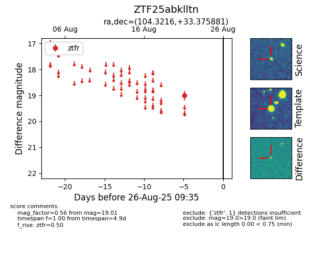

Target ZTF25abklltn at 2025-08-26 09:35, see:
FINK: fink-portal.org/ZTF25abklltn
Lasair: lasair-ztf.lsst.ac.uk/objects/ZTF25abklltn
ALeRCE: alerce.online/object/ZTF25abklltn
alt names
ZTF25abklltn (ztf,fink)
coordinates:
equatorial (ra, dec) = (104.3216,+33.37588)
galactic (l, b) = (183.0393,+15.65320)
photometry
last ztfr=19.01
1 ztfr detections
